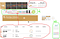

Is it smart advertising or smart clickbait

This picture

comes from a website that gives financial analysis. Look at how the advertisement (the top banner) fits the content of the website. Given how it is positioned and how the data are presented, is it more likely to click on the ad believing that this can be a piece of analysis, diagram flow related to the content, or a calendar for selecting data to filter the data. I just experienced this right now.
You know what this also the kind of infographic content that the persons that consume this kind of website are very likely to need.
Just asking myself questions?
if you have the answers, please let me know.